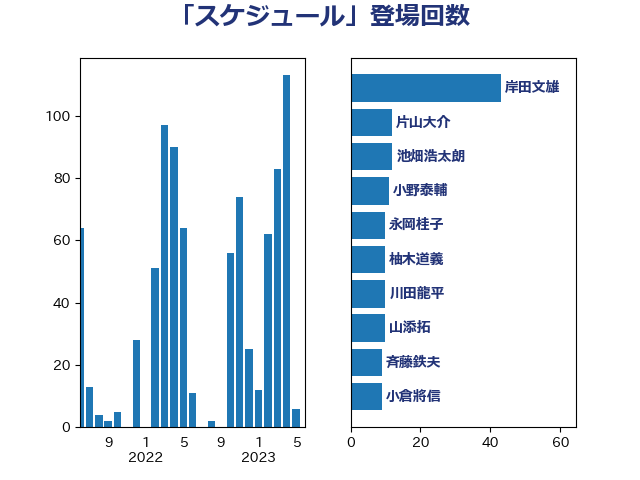

単語「スケジュール」

| 河野太郎 | 自由民主党 | 52 回 |
| 山本博司 | 公明党 | 17 回 |
| 岸田文雄 | 自由民主党 | 15 回 |
| 中島克仁 | 立憲民主党 | 13 回 |
| 梶山弘志 | 自由民主党 | 13 回 |
| 伊藤孝恵 | 国民民主党 | 12 回 |
| 菅義偉 | 自由民主党 | 12 回 |
| 中谷一馬 | 立憲民主党 | 11 回 |
| 加藤勝信 | 自由民主党 | 10 回 |
| 柚木道義 | 立憲民主党 | 10 回 |
| 柴田巧 | 日本維新の会 | 10 回 |
| 石橋通宏 | 立憲民主党 | 10 回 |
| 斉藤鉄夫 | 公明党 | 9 回 |
| 萩生田光一 | 自由民主党 | 9 回 |
| 金子恵美 | 立憲民主党 | 9 回 |
| 渡辺周 | 立憲民主党 | 8 回 |
| 道下大樹 | 立憲民主党 | 8 回 |
| 丸川珠代 | 自由民主党 | 7 回 |
| 平井卓也 | 自由民主党 | 7 回 |
| 末松信介 | 自由民主党 | 7 回 |
| 藤井比早之 | 自由民主党 | 7 回 |
| 藤田文武 | 日本維新の会 | 7 回 |
| 岸信夫 | 自由民主党 | 6 回 |
| 川田龍平 | 立憲民主党 | 6 回 |
| 片山大介 | 日本維新の会 | 6 回 |
| 芳賀道也 | 国民民主党 | 6 回 |
| 赤羽一嘉 | 公明党 | 6 回 |
| 足立康史 | 日本維新の会 | 6 回 |
| 階猛 | 立憲民主党 | 6 回 |
| 青柳陽一郎 | 立憲民主党 | 6 回 |
| 佐藤英道 | 公明党 | 5 回 |
| 小西洋之 | 立憲民主党 | 5 回 |
| 小野泰輔 | 日本維新の会 | 5 回 |
| 岸真紀子 | 立憲民主党 | 5 回 |
| 森本真治 | 立憲民主党 | 5 回 |
| 横沢高徳 | 立憲民主党 | 5 回 |
| 浅野哲 | 国民民主党 | 5 回 |
| 茂木敏充 | 自由民主党 | 5 回 |
| 野上浩太郎 | 自由民主党 | 5 回 |
| 中川正春 | 立憲民主党 | 4 回 |
| 中野洋昌 | 公明党 | 4 回 |
| 勝部賢志 | 立憲民主党 | 4 回 |
| 古川禎久 | 自由民主党 | 4 回 |
| 吉田統彦 | 立憲民主党 | 4 回 |
| 嘉田由紀子 | 無所属 | 4 回 |
| 城井崇 | 立憲民主党 | 4 回 |
| 堀内詔子 | 自由民主党 | 4 回 |
| 大串博志 | 立憲民主党 | 4 回 |
| 岩渕友 | 日本共産党 | 4 回 |
| 杉尾秀哉 | 立憲民主党 | 4 回 |
| 東徹 | 日本維新の会 | 4 回 |
| 柳ヶ瀬裕文 | 日本維新の会 | 4 回 |
| 橋本聖子 | 無所属 | 4 回 |
| 武田良太 | 自由民主党 | 4 回 |
| 池下卓 | 日本維新の会 | 4 回 |
| 河野義博 | 公明党 | 4 回 |
| 牧山ひろえ | 立憲民主党 | 4 回 |
| 田村智子 | 日本共産党 | 4 回 |
| 田村貴昭 | 日本共産党 | 4 回 |
| 石川香織 | 立憲民主党 | 4 回 |
| 西村康稔 | 自由民主党 | 4 回 |
| 金子恭之 | 自由民主党 | 4 回 |
| 高木かおり | 日本維新の会 | 4 回 |
| たがや亮 | れいわ新選組 | 3 回 |
| 三浦信祐 | 公明党 | 3 回 |
| 上川陽子 | 自由民主党 | 3 回 |
| 井上英孝 | 日本維新の会 | 3 回 |
| 伊藤孝江 | 公明党 | 3 回 |
| 佐藤啓 | 自由民主党 | 3 回 |
| 勝目康 | 自由民主党 | 3 回 |
| 塩川鉄也 | 日本共産党 | 3 回 |
| 塩田博昭 | 公明党 | 3 回 |
| 大口善徳 | 公明党 | 3 回 |
| 奥野総一郎 | 立憲民主党 | 3 回 |
| 安江伸夫 | 公明党 | 3 回 |
| 小沢雅仁 | 立憲民主党 | 3 回 |
| 山添拓 | 日本共産党 | 3 回 |
| 岩田和親 | 自由民主党 | 3 回 |
| 平沢勝栄 | 自由民主党 | 3 回 |
| 末松義規 | 立憲民主党 | 3 回 |
| 梅村みずほ | 日本維新の会 | 3 回 |
| 田村まみ | 国民民主党 | 3 回 |
| 田村憲久 | 自由民主党 | 3 回 |
| 石川博崇 | 公明党 | 3 回 |
| 紙智子 | 日本共産党 | 3 回 |
| 西銘恒三郎 | 自由民主党 | 3 回 |
| 野間健 | 立憲民主党 | 3 回 |
| 鈴木俊一 | 自由民主党 | 3 回 |
| 鈴木宗男 | 日本維新の会 | 3 回 |
| 鈴木庸介 | 立憲民主党 | 3 回 |
| 鈴木敦 | 国民民主党 | 3 回 |
| 長妻昭 | 立憲民主党 | 3 回 |
| 馬場伸幸 | 日本維新の会 | 3 回 |
| 高橋千鶴子 | 日本共産党 | 3 回 |
| 中西健治 | 自由民主党 | 2 回 |
| 伊波洋一 | 無所属 | 2 回 |
| 佐々木さやか | 公明党 | 2 回 |
| 吉川沙織 | 立憲民主党 | 2 回 |
| 吉田忠智 | 立憲民主党 | 2 回 |
| 宮本徹 | 日本共産党 | 2 回 |
| 小倉將信 | 自由民主党 | 2 回 |
| 小野田紀美 | 自由民主党 | 2 回 |
| 山下芳生 | 日本共産党 | 2 回 |
| 山井和則 | 立憲民主党 | 2 回 |
| 岡本あき子 | 立憲民主党 | 2 回 |
| 岡本三成 | 公明党 | 2 回 |
| 岡田克也 | 立憲民主党 | 2 回 |
| 打越さく良 | 立憲民主党 | 2 回 |
| 斎藤洋明 | 自由民主党 | 2 回 |
| 本田顕子 | 自由民主党 | 2 回 |
| 松野博一 | 自由民主党 | 2 回 |
| 柳本顕 | 自由民主党 | 2 回 |
| 梅村聡 | 日本維新の会 | 2 回 |
| 櫻井周 | 立憲民主党 | 2 回 |
| 武井俊輔 | 自由民主党 | 2 回 |
| 江田憲司 | 立憲民主党 | 2 回 |
| 池畑浩太朗 | 日本維新の会 | 2 回 |
| 渡辺猛之 | 自由民主党 | 2 回 |
| 田中健 | 国民民主党 | 2 回 |
| 田名部匡代 | 立憲民主党 | 2 回 |
| 矢倉克夫 | 公明党 | 2 回 |
| 石井章 | 日本維新の会 | 2 回 |
| 福島みずほ | 社会民主党 | 2 回 |
| 竹内真二 | 公明党 | 2 回 |
| 笠浩史 | 無所属 | 2 回 |
| 緑川貴士 | 立憲民主党 | 2 回 |
| 美延映夫 | 日本維新の会 | 2 回 |
| 羽田次郎 | 立憲民主党 | 2 回 |
| 自見はなこ | 自由民主党 | 2 回 |
| 藤巻健太 | 日本維新の会 | 2 回 |
| 藤木眞也 | 自由民主党 | 2 回 |
| 西岡秀子 | 国民民主党 | 2 回 |
| 逢坂誠二 | 立憲民主党 | 2 回 |
| 進藤金日子 | 自由民主党 | 2 回 |
| 野田聖子 | 自由民主党 | 2 回 |
| 青山大人 | 立憲民主党 | 2 回 |
| 音喜多駿 | 日本維新の会 | 2 回 |
| 高村正大 | 自由民主党 | 2 回 |
| 鬼木誠 | 立憲民主党 | 2 回 |
| こやり隆史 | 自由民主党 | 1 回 |
| 三木圭恵 | 日本維新の会 | 1 回 |
| 上田清司 | 国民民主党 | 1 回 |
| 下村博文 | 自由民主党 | 1 回 |
| 世耕弘成 | 自由民主党 | 1 回 |
| 中川康洋 | 公明党 | 1 回 |
| 中川貴元 | 自由民主党 | 1 回 |
| 中川郁子 | 自由民主党 | 1 回 |
| 串田誠一 | 日本維新の会 | 1 回 |
| 五十嵐清 | 自由民主党 | 1 回 |
| 井上信治 | 自由民主党 | 1 回 |
| 今井絵理子 | 自由民主党 | 1 回 |
| 伊佐進一 | 公明党 | 1 回 |
| 伊藤俊輔 | 立憲民主党 | 1 回 |
| 伊藤岳 | 日本共産党 | 1 回 |
| 伊藤達也 | 自由民主党 | 1 回 |
| 佐藤茂樹 | 公明党 | 1 回 |
| 倉林明子 | 日本共産党 | 1 回 |
| 加田裕之 | 自由民主党 | 1 回 |
| 加藤鮎子 | 自由民主党 | 1 回 |
| 北村経夫 | 自由民主党 | 1 回 |
| 古川元久 | 国民民主党 | 1 回 |
| 古賀之士 | 立憲民主党 | 1 回 |
| 国定勇人 | 自由民主党 | 1 回 |
| 國重徹 | 公明党 | 1 回 |
| 土屋品子 | 自由民主党 | 1 回 |
| 坂本哲志 | 自由民主党 | 1 回 |
| 堤かなめ | 立憲民主党 | 1 回 |
| 塩崎彰久 | 自由民主党 | 1 回 |
| 塩村あやか | 立憲民主党 | 1 回 |
| 大島敦 | 立憲民主党 | 1 回 |
| 大野泰正 | 自由民主党 | 1 回 |
| 守島正 | 日本維新の会 | 1 回 |
| 安達澄 | 無所属 | 1 回 |
| 室井邦彦 | 日本維新の会 | 1 回 |
| 宮崎政久 | 自由民主党 | 1 回 |
| 宮本岳志 | 日本共産党 | 1 回 |
| 小寺裕雄 | 自由民主党 | 1 回 |
| 小泉進次郎 | 自由民主党 | 1 回 |
| 山崎誠 | 立憲民主党 | 1 回 |
| 山本香苗 | 公明党 | 1 回 |
| 山田賢司 | 自由民主党 | 1 回 |
| 山谷えり子 | 自由民主党 | 1 回 |
| 岩本剛人 | 自由民主党 | 1 回 |
| 川崎ひでと | 自由民主党 | 1 回 |
| 平山佐知子 | 無所属 | 1 回 |
| 平林晃 | 公明党 | 1 回 |
| 平沼正二郎 | 自由民主党 | 1 回 |
| 後藤祐一 | 立憲民主党 | 1 回 |
| 後藤茂之 | 自由民主党 | 1 回 |
| 掘井健智 | 日本維新の会 | 1 回 |
| 斎藤嘉隆 | 立憲民主党 | 1 回 |
| 木村次郎 | 自由民主党 | 1 回 |
| 杉久武 | 公明党 | 1 回 |
| 杉本和巳 | 日本維新の会 | 1 回 |
| 柴山昌彦 | 自由民主党 | 1 回 |
| 森まさこ | 自由民主党 | 1 回 |
| 横山信一 | 公明党 | 1 回 |
| 武部新 | 自由民主党 | 1 回 |
| 江島潔 | 自由民主党 | 1 回 |
| 泉田裕彦 | 自由民主党 | 1 回 |
| 浜口誠 | 国民民主党 | 1 回 |
| 清水貴之 | 日本維新の会 | 1 回 |
| 渡辺孝一 | 自由民主党 | 1 回 |
| 源馬謙太郎 | 立憲民主党 | 1 回 |
| 熊野正士 | 公明党 | 1 回 |
| 牧原秀樹 | 自由民主党 | 1 回 |
| 牧島かれん | 自由民主党 | 1 回 |
| 玄葉光一郎 | 立憲民主党 | 1 回 |
| 田島麻衣子 | 立憲民主党 | 1 回 |
| 田所嘉徳 | 自由民主党 | 1 回 |
| 石井正弘 | 自由民主党 | 1 回 |
| 石井苗子 | 日本維新の会 | 1 回 |
| 石川大我 | 立憲民主党 | 1 回 |
| 礒崎哲史 | 国民民主党 | 1 回 |
| 神田憲次 | 自由民主党 | 1 回 |
| 神田潤一 | 自由民主党 | 1 回 |
| 秋野公造 | 公明党 | 1 回 |
| 竹内譲 | 公明党 | 1 回 |
| 笠井亮 | 日本共産党 | 1 回 |
| 米山隆一 | 立憲民主党 | 1 回 |
| 細田健一 | 自由民主党 | 1 回 |
| 羽生田俊 | 自由民主党 | 1 回 |
| 若宮健嗣 | 自由民主党 | 1 回 |
| 若松謙維 | 公明党 | 1 回 |
| 菅家一郎 | 自由民主党 | 1 回 |
| 西田昌司 | 自由民主党 | 1 回 |
| 西野太亮 | 自由民主党 | 1 回 |
| 角田秀穂 | 公明党 | 1 回 |
| 谷合正明 | 公明党 | 1 回 |
| 谷川とむ | 自由民主党 | 1 回 |
| 遠藤良太 | 日本維新の会 | 1 回 |
| 里見隆治 | 公明党 | 1 回 |
| 金村龍那 | 日本維新の会 | 1 回 |
| 鈴木淳司 | 自由民主党 | 1 回 |
| 鈴木英敬 | 自由民主党 | 1 回 |
| 鈴木隼人 | 自由民主党 | 1 回 |
| 長谷川淳二 | 自由民主党 | 1 回 |
| 高橋はるみ | 自由民主党 | 1 回 |
| 高橋英明 | 日本維新の会 | 1 回 |
| 高階恵美子 | 自由民主党 | 1 回 |
| 鷲尾英一郎 | 自由民主党 | 1 回 |